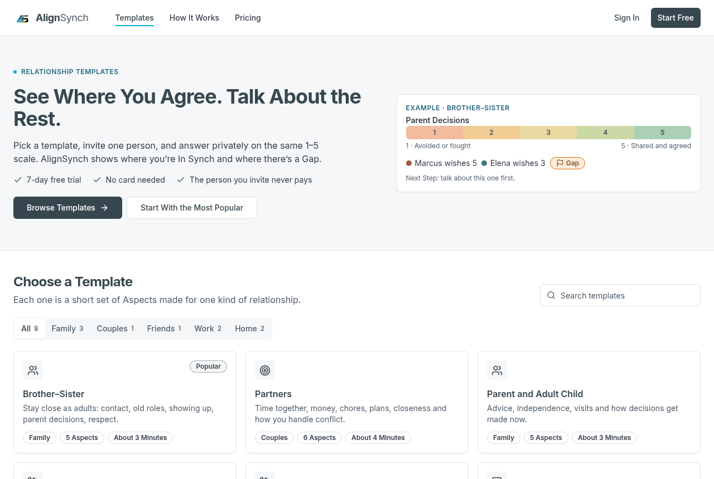
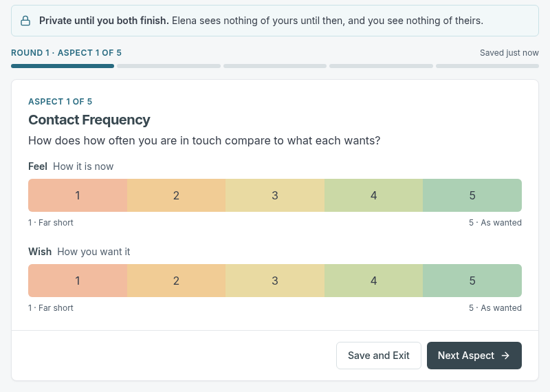
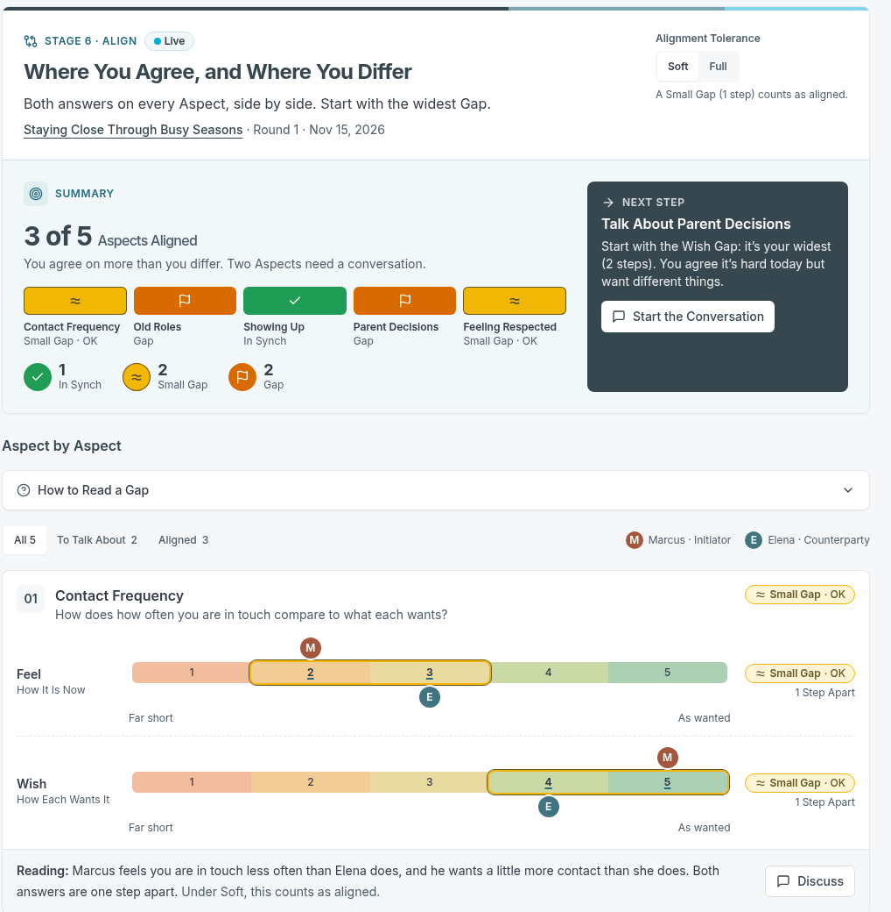
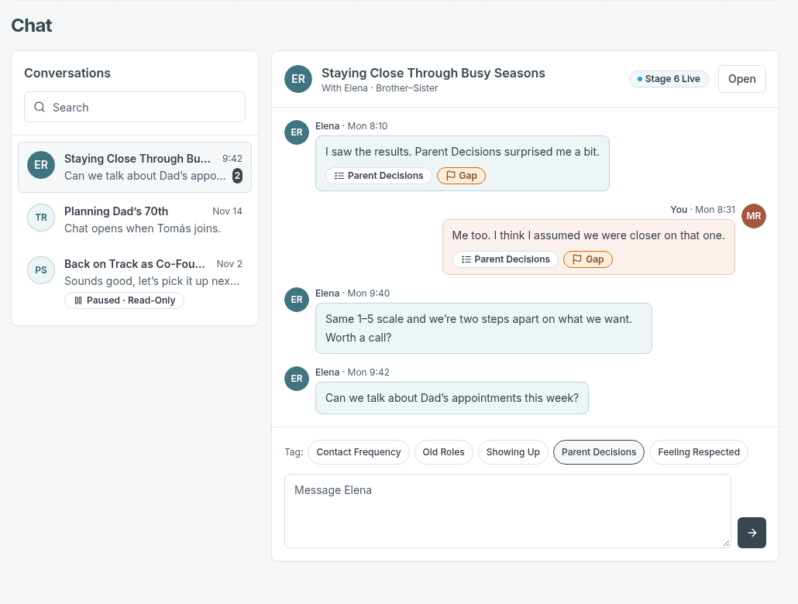

Features
Everything You Need to Get on the Same Page.
Templates to start from, private answers, a clear side-by-side view, and a calm place to talk it through.
Templates
Start From a Template, Make It Yours
- Templates for family, couples, friends, work and home
- Rename, remove or add Aspects
- Two agreed words at each end of every scale

Private Answers
Answer in Private. Compare Together.
- Feel and Wish on a 1 to 5 scale
- Nothing is shown until you both finish
- Save and come back any time

Align
See Every Gap at a Glance
- In Synch, Small Gap or Gap for each Aspect
- Soft or Full Alignment Tolerance
- A suggested next step, starting with the widest Gap

Discuss
Talk About One Thing at a Time
- A Discussion for the relationship and for each Aspect
- Propose a change; the other person accepts or declines
- Chat for quick back-and-forth

Honest Roadmap
What's in 2.0, and What's Next.
Built means you can use it today. Tentative means it's planned for 2.0 but not confirmed. Later means not yet.
In 2.0TentativeLater
| Feature | Status | Source |
|---|---|---|
| Relationship Templates, editable Aspects | In 2.0 | PDF p14, p32 |
| Basic Mode: Feel and Wish | In 2.0 | PDF p15 |
| Private answers until both finish | In 2.0 | PDF p89–90 |
| Align with Alignment Tolerance | In 2.0 | Product: Stage 6 |
| Discussion, Chat and Propose a Change | In 2.0 | PDF p89–90 |
| 7 days free, pause, one Extra Week | In 2.0 | Product decision §45 |
| Advanced Mode: Think and Guess | Tentative | PDF p15 · confirm built before marketing it |
| Email reminders about open Gaps | Tentative | PDF p27 #10, p75 · trial emails exist, reminders unconfirmed |
| Plans for coaches and professionals | Later | PDF p29, p31 (Branded Coach) · PM decision |
| Groups and networks | Later | PM decision 2026-11-19 |
| Age-based personal templates | Later | PDF p9 Change 5 |
| Heat Chart and analysis views | Later | PDF p82 |